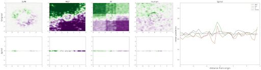
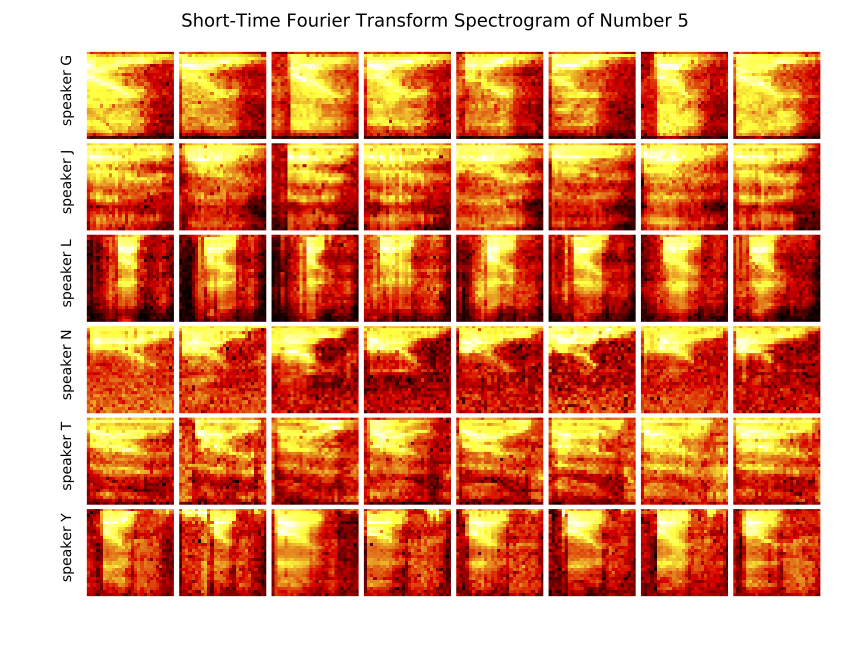

###Lifelong Learning: Theory and Practice PI: Joshua T. Vogelstein, [JHU](https://www.jhu.edu/)<br> Jayanta Dey, Ali Geisa, Hayden Helm, Ronak Mehta, Will LeVine, Carey E. Priebe <center>  </center> --- ### Motivation .ye[Research Question:] Why is LL difficult, and how can we design algorithms/datasets to solve it? .ye[Approach:] - Introduced out-of-distribution (OOD) learning theory framework for theoretical analysis of lifelong learning - Introduced ensembling representations .ye[Accomplishments:] - Achieved consistent positive forward and backward transfer (synergistic learning) in practice - Proved various OOD weak learner theorems .ye[Key Take-Away:] LL is fundamentally harder than classical ML, and ensembling representations can synergistically learn --- ### What is learning (Mitchell)? A computer program is said to learn from experience E with respect to some class of tasks T and performance measure P, if its performance at tasks in T, as measured by P, improves with experience E. -- Tom Mitchell, 1997 - Pro's - multiple tasks - uncouples experience (data) with tasks - explicit mention of improving due to data - implicitly requires transfer - Con's - not formalized --- ### Defining/Quantifying Learning & Forgetting <!-- The above two definitions enable one to assess .ye[whether] an agent $f$ has learned, but not .ye[how much] it learned. -->  Using non-task data to improve performance over what it could achieve using only task data Key is measuring improvement in performance rather than raw accuracy --- ### What is forward learning? - Let $n\_t$ be the last occurence of task $t$ in $\mathbf{S}\_n$ - Let $\mathbf{S}\_n^{< t} = \lbrace S\_1, S\_2, \ldots, S\_{n_t} \rbrace$ - .ye[Forward] learning efficiency is the improvement on task $t$ resulting from all data .ye[preceding] task $t$ $$ FLE^t\_{\mathbf{n}}(f) := \frac{\mathcal{E}_f^t(\mathbf{S}^{t}\_n)}{\mathcal{E}_f^t(\mathbf{S}^{< t}\_n)} $$ <br> $f$ .ye[forward learns] if $FLE_{\mathbf{n}}(f) > 1$. --- ### What is backward learning? .ye[Backward] learning efficiency is the improvement on task $t$ resulting from all data .ye[after] task $t$ $$ BLE^t\_{\mathbf{n}}(f) := \frac{\mathcal{E}_f^t(\mathbf{S}^{< t}\_n)}{\mathcal{E}_f^t(\mathbf{S}\_n)} $$ <br> $f$ .ye[backward learns] if $BLE_{\mathbf{n}}(f) > 1$. --- ### Learning efficiency factorizes $$LE^t\_{\mathbf{n}}(f) := FLE^t\_{\mathbf{n}}(f) \times BLE^t\_{\mathbf{n}}(f) $$ $$ \frac{\mathcal{E}_f^t(\mathbf{S}^{t}\_n)}{\mathcal{E}_f^t(\mathbf{S}\_n)} = \frac{\mathcal{E}_f^t(\mathbf{S}^{t}\_n)}{\mathcal{E}_f^t(\mathbf{S}^{< t}\_n)} \times \frac{\mathcal{E}_f^t(\mathbf{S}^{< t}\_n)}{\mathcal{E}_f^t(\mathbf{S}\_n)} $$ <br> --- ### Our approach: ensembling representations  --- ### What is lifelong cheating? - Store every sample you've ever seen - Every time we are faced with a new data, just update everything in batch mode - Now just run your favorite multitask $f$ - Doing so consumes $\mathcal{O}(n^2)$ resources because $ \sum_{i =1}^n i \approx n^2$ - So, to differentiate lifelong learning from multitask learning requires a particularly efficient algorithm - $f$ must consume less than quadratic resources as a function of $n$, $f \in o(n^2)$ --- ### A computational taxonomy | Par. | → | ← | capacity | space | time | Examples | :---: | :---: | :---: | :---:| :---: | :---: | | par | - | - | 1 | T | nT | EWC | par | - | - | 1 | 1 | n | O-EWC, SI, LwF | par | + | - | 1 | n | nT | Total Replay | semipar | + | 0 | T | T<sup>2 | nT | ProgNN | semipar | + | - | T | T | n | DF-CNN | semipar | + | + | T | T + n | n | ODIN | nonpar | + | + | n | n | n | ODIF --- ### Omnidirectional Algorithms can Transfer Between XOR and XNOR  --- ## CIFAR 10x10 .pull-left[ - *CIFAR 100* is a popular image classification dataset with 100 classes of images. - 500 training images and 100 testing images per class. - All images are 32x32 color images. - CIFAR 10x10 breaks the 100-class task problem into 10 tasks, each with 10-class. ] .pull-right[ <img src="images/l2m_18mo/cifar-10.png" style="position:absolute; left:450px; width:400px;"/> ] --- ### Omnidirectional Algorithms Show Forward Transfer CIFAR 10x10 <!-- - *CIFAR 100* is a popular image classification dataset with 100 classes of images. --> <!-- - CIFAR 10x10 breaks the 100-class task problem into 10 tasks, each with 10-class. -->  --- ### Omnidirectional Algorithms Uniquely Show Backward Transfer for Each Task  --- ### Theory - Classical ML theory is great for classical ML - This framework is very inadequate for OOD scenarios - In classical ML, only have one data set and one task - In OOD scenarios, we have multiple data sets and multiple tasks - Need a new framework --- ### OOD Learning Theory We uncouple the evaluation distribution from training data distributions  --- ### Generalized Task - In classical ML, given one data set $\mathbf{S}$ and task $t$. - Generalized task in OOD framework is multiple data sets $ \lbrace \mathbf{S}^1, ... , \mathbf{S}^m \rbrace $ and multiple tasks $ \lbrace t_1, ..., t_n \rbrace $, $m \geq n$. - Multitask learning, transfer learning, etc. are generalized tasks. --- ### Transfer Learning - One task and multiple data sets. - Measure if OOD data helped performance over just task data $$ \text{LE}_f^t(\mathbf{S}^1, \mathbf{S}) = \frac{\mathcal{E}_f^t(\mathbf{S}^1)}{\mathcal{E}_f^t(\mathbf{S})} $$ - $ \mathbf{S}^1 $ is the task data. - $ \mathbf{S} $ is all of the data - Transfer learned if $ \text{LE}_f^t > 1 $. --- ### Multitask Learning - Multiple tasks and multiple data sets. - Measure transfer learning for each task, $$ \text{LE}_f^t(\mathbf{S}^t, \mathbf{S}) = \frac{\mathcal{E}_f^t(\mathbf{S}^t)}{\mathcal{E}_f^t(\mathbf{S})} $$ - $ \mathbf{S}^t $ is the task $t$ data. - $ \mathbf{S} $ is all of the data. - Transfer learned for the task if $ \text{LE}_f^t > 1 $. - Multitask learned if weighted average of learning efficiencies $\text{LE}_f^{t_1}, ..., \text{LE}^{t_n}$ is greater than $1$. --- ### Lifelong Learning - Similar to multitask learning - Difference is that it is done sequentially in time. - Require computational complexity constraints on hypothesis and learner spaces, $ o(n) $ space and/or $ o(n^2) $ time as upperbounds. - Everything is streaming: data, queries, actions, error, and tasks. Anything about task can change over time. --- ### Quantifying Lifelong Learning Use forward and backward learning metrics --- ### Putting LL within OOD Framework  --- ### Special cases Each of the previous definitions are all special cases of $LE^t(\mathbf{S}^A, \mathbf{S}^B, f)$, for specific choices of $\mathbf{S}^A$ and $\mathbf{S}^B$ - Learning: $\mathbf{S}^A=\mathbf{S}\_0$ and $\mathbf{S}^B=\mathbf{S}\_n$. - Transfer learning: $\mathbf{S}^A=\mathbf{S}^1$ and $\mathbf{S}^B=\mathbf{S}\_n$. - Multitask learning: for each $t$, $\mathbf{S}^A=\mathbf{S}^t$ and $\mathbf{S}^B=\mathbf{S}\_n$. - Forward learning: $\mathbf{S}^A=\mathbf{S}^t$ and $\mathbf{S}^B=\mathbf{S}^{< t}$. - Backward learning: $\mathbf{S}^A=\mathbf{S}^{< t}$ and $\mathbf{S}^B=\mathbf{S}\_n$. Conjecture: All learning metrics we care about are functions of learning efficiency for a specific $\mathbf{S}^A$ and $\mathbf{S}^B$. --- ### Proving novel properties of OOD learning  basically, using non-task data to improve performance at all  basically, using non-task data to perform arbitrarily well --- ### Weak OOD Learner Theorem Classical theory: - Weak learning: can do better than chance on some task with sufficient data - Strong learning: can do arbitrarily close to optimal on some task with sufficient data - Weak Learner Theorem: if a problem is weakly learnable, it is also strongly learnable OOD learning theory - Training distribution is uncoupled from evaluation distribution --- ### More data is inadequate for LL Theorem 1: With *only* out-of-distribution data, there exists some problems that are weakly, but not strongly, learnable. - This implies that OOD learning is different *in kind* from in-distribution learning. - Lifelong learning is a special case of OOD learning - Getting .ye[more] data is *not* guaranteed to improve performance arbitrarily in LL, we need .ye[better] data --- ### Learning efficiency is a fundamental notion of learning Theorem 2: Weak OOD learnability implies transfer learnability (i.e., learning efficiency > 1). That is, if one can weakly learn, one can also transfer learn, but not necessarily vice versa. - This implies that transfer learnability is a fundamental property of learning problems - In other words, inability to transfer is equivalent to inability to learn at all. --- ### Future Directions/ Transitions - omnidirctional algorithm code continues to improve [http://proglearn.neurodata.io/](http://proglearn.neurodata.io/) - streaming forest for streaming lifelong learning setup [https://sdtf.neurodata.io](https://sdtf.neurodata.io)  --- ### Kernel Density Networks/Forests generate well calibrated posteriors - [https://github.com/neurodata/kdg](https://github.com/neurodata/kdg) - KDG on Guassian XOR simulation data  <br> --- ### Deep Networks are the worst model of the mind  --- ### Acknowledgements <!-- <div class="small-container"> <img src="faces/ebridge.jpg"/> <div class="centered">Eric Bridgeford</div> </div> <div class="small-container"> <img src="faces/pedigo.jpg"/> <div class="centered">Ben Pedigo</div> </div> <div class="small-container"> <img src="faces/jaewon.jpg"/> <div class="centered">Jaewon Chung</div> </div> --> <div class="small-container"> <img src="faces/yummy.jpg"/> <div class="centered">yummy</div> </div> <div class="small-container"> <img src="faces/lion.jpg"/> <div class="centered">lion</div> </div> <div class="small-container"> <img src="faces/violet.jpg"/> <div class="centered">baby girl</div> </div> <div class="small-container"> <img src="faces/family.jpg"/> <div class="centered">family</div> </div> <div class="small-container"> <img src="faces/earth.jpg"/> <div class="centered">earth</div> </div> <div class="small-container"> <img src="faces/milkyway.jpg"/> <div class="centered">milkyway</div> </div> ##### JHU <div class="small-container"> <img src="faces/cep.png"/> <div class="centered">Carey Priebe</div> </div> <!-- <div class="small-container"> <img src="faces/randal.jpg"/> <div class="centered">Randal Burns</div> </div> --> <!-- <div class="small-container"> <img src="faces/cshen.jpg"/> <div class="centered">Cencheng Shen</div> </div> --> <!-- <div class="small-container"> <img src="faces/bruce_rosen.jpg"/> <div class="centered">Bruce Rosen</div> </div> <div class="small-container"> <img src="faces/kent.jpg"/> <div class="centered">Kent Kiehl</div> </div> --> <!-- <div class="small-container"> <img src="faces/mim.jpg"/> <div class="centered">Michael Miller</div> </div> <div class="small-container"> <img src="faces/dtward.jpg"/> <div class="centered">Daniel Tward</div> </div> --> <!-- <div class="small-container"> <img src="faces/vikram.jpg"/> <div class="centered">Vikram Chandrashekhar</div> </div> <div class="small-container"> <img src="faces/drishti.jpg"/> <div class="centered">Drishti Mannan</div> </div> --> <div class="small-container"> <img src="faces/jesse.jpg"/> <div class="centered">Jesse Patsolic</div> </div> <!-- <div class="small-container"> <img src="faces/falk_ben.jpg"/> <div class="centered">Benjamin Falk</div> </div> --> <!-- <div class="small-container"> <img src="faces/kwame.jpg"/> <div class="centered">Kwame Kutten</div> </div> --> <!-- <div class="small-container"> <img src="faces/perlman.jpg"/> <div class="centered">Eric Perlman</div> </div> --> <!-- <div class="small-container"> <img src="faces/loftus.jpg"/> <div class="centered">Alex Loftus</div> </div> --> <!-- <div class="small-container"> <img src="faces/bcaffo.jpg"/> <div class="centered">Brian Caffo</div> </div> --> <!-- <div class="small-container"> <img src="faces/minh.jpg"/> <div class="centered">Minh Tang</div> </div> --> <!-- <div class="small-container"> <img src="faces/avanti.jpg"/> <div class="centered">Avanti Athreya</div> </div> --> <!-- <div class="small-container"> <img src="faces/vince.jpg"/> <div class="centered">Vince Lyzinski</div> </div> --> <!-- <div class="small-container"> <img src="faces/dpmcsuss.jpg"/> <div class="centered">Daniel Sussman</div> </div> --> <!-- <div class="small-container"> <img src="faces/youngser.jpg"/> <div class="centered">Youngser Park</div> </div> --> <!-- <div class="small-container"> <img src="faces/shangsi.jpg"/> <div class="centered">Shangsi Wang</div> </div> --> <!-- <div class="small-container"> <img src="faces/tyler.jpg"/> <div class="centered">Tyler Tomita</div> </div> --> <!-- <div class="small-container"> <img src="faces/james.jpg"/> <div class="centered">James Brown</div> </div> --> <!-- <div class="small-container"> <img src="faces/disa.jpg"/> <div class="centered">Disa Mhembere</div> </div> --> <!-- <div class="small-container"> <img src="faces/gkiar.jpg"/> <div class="centered">Greg Kiar</div> </div> --> <!-- <div class="small-container"> <img src="faces/jeremias.png"/> <div class="centered">Jeremias Sulam</div> </div> --> <div class="small-container"> <img src="faces/meghana.png"/> <div class="centered">Meghana Madhya</div> </div> <!-- <div class="small-container"> <img src="faces/percy.png"/> <div class="centered">Percy Li</div> </div> --> <div class="small-container"> <img src="faces/hayden.png"/> <div class="centered">Hayden Helm</div> </div> <div class="small-container"> <img src="faces/rguo.jpg"/> <div class="centered">Richard Gou</div> </div> <div class="small-container"> <img src="faces/ronak.jpg"/> <div class="centered">Ronak Mehta</div> </div> <div class="small-container"> <img src="faces/jayanta.jpg"/> <div class="centered">Jayanta Dey</div> </div> <div class="small-container"> <img src="faces/will.jpg"/> <div class="centered">Will LeVine</div> </div> ##### Microsoft Research <div class="small-container"> <img src="faces/chwh-180x180.jpg"/> <div class="centered">Chris White</div> </div> <div class="small-container"> <img src="faces/weiwei.jpg"/> <div class="centered">Weiwei Yang</div> </div> <div class="small-container"> <img src="faces/jolarso150px.png"/> <div class="centered">Jonathan Larson</div> </div> <div class="small-container"> <img src="faces/brtower-180x180.jpg"/> <div class="centered">Bryan Tower</div> </div> ##### DARPA L2M <!-- Hava, Ben, Robert, Jennifer, Ted. --> {[BME](https://www.bme.jhu.edu/),[CIS](http://cis.jhu.edu/), [ICM](https://icm.jhu.edu/), [KNDI](http://kavlijhu.org/)}@[JHU](https://www.jhu.edu/) | [neurodata](https://neurodata.io) <br> [jovo@jhu.edu](mailto:j1c@jhu.edu) | <http://neurodata.io/talks> | [@neuro_data](https://twitter.com/neuro_data) </div> <!-- <img src="images/funding/nsf_fpo.png" STYLE="HEIGHT:95px;"/> --> <!-- <img src="images/funding/nih_fpo.png" STYLE="HEIGHT:95px;"/> --> <!-- <img src="images/funding/darpa_fpo.png" STYLE=" HEIGHT:95px;"/> --> <!-- <img src="images/funding/iarpa_fpo.jpg" STYLE="HEIGHT:95px;"/> --> <!-- <img src="images/funding/KAVLI.jpg" STYLE="HEIGHT:95px;"/> --> <!-- <img src="images/funding/schmidt.jpg" STYLE="HEIGHT:95px;"/> --> --- background-image: url(images/l_and_v.jpeg) .footnote[Questions?] --- class: middle # .center[Appendix] --- .small[ ### Publications 1. A. Geisa et al. [Towards a theory of out-of-distribution learning](https://arxiv.org/abs/2109.14501), arXiv, 2021. 1. J. T. Vogelstein et al. [Omnidirectional Transfer for Quasilinear Lifelong Learning](https://arxiv.org/abs/2004.12908), arXiv, 2021. 1. Xu, Haoyin, et al. [Streaming Decision Trees and Forests](https://arxiv.org/abs/2110.08483), arXiv, 2021. 1. C. E. Priebe et al. [Modern Machine Learning: Partition and Vote](https://doi.org/10.1101/2020.04.29.068460), 2020. 1. R Guo, et al. [Estimating Information-Theoretic Quantities with Uncertainty Forests](https://arxiv.org/abs/1907.00325). arXiv, 2019. 1. R. Perry, et al. [Manifold Forests: Closing the Gap on Neural Networks](https://openreview.net/forum?id=B1xewR4KvH). arXiv, 2019. 1. C. Shen and J. T. Vogelstein. [Decision Forests Induce Characteristic Kernels](https://arxiv.org/abs/1812.00029). arXiv, 2019. 1. M. Madhya, et al. [Geodesic Learning via Unsupervised Decision Forests](https://arxiv.org/abs/1907.02844). arXiv, 2019. 1. M. Madhya, et al. [PACSET (Packed Serialized Trees): Reducing Inference Latency for Tree Ensemble Deployment](https://arxiv.org/abs/2011.05383). arXiv, 2020. ### Conferences 1. J.T. Vogelstein et al. A biological implementation of lifelong learning in the pursuit of artificial general intelligence. NAISys, 2020. 2. B. Pedigo et al. A quantitative comparison of a complete connectome to artificial intelligence architectures. NAISys, 2020. ] --- ### Biological learning is on top  --- ### Spoken Digit dataset .pull-left[ - *Spoken Digit* contains recording from 6 different speakers. - Each digit has 50 recordings (3000 total recordings). - For each recording spectrogram was extracted using using Hanning windows of duration 16 ms with an overlap of 4 ms. - The spectrograms were resized down to 28×28. ] .pull-right[  ] --- ### Omnidirectional Algorithms on Spoken Digit Task